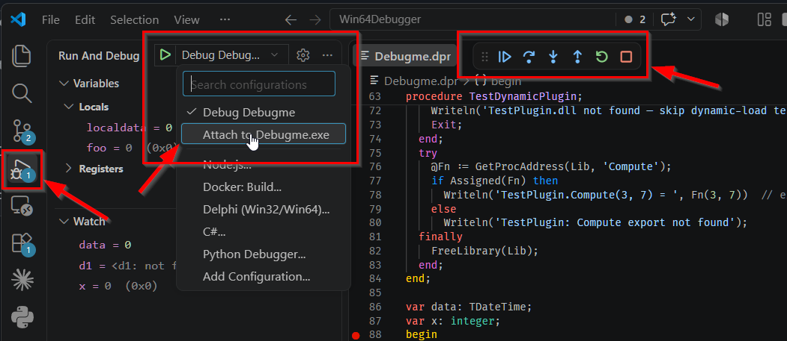

2. Your first session
With the project compiled per
chapter 1 and a launch.json in
place, a session is five steps.
Starting a session
-
Compile your project with the debug settings, so the
.mapand.rsmland next to the.exe. -
Open the project folder in VS Code — from the Delphi IDE via Open in Visual Studio
Code, or by opening the folder and writing
launch.jsonyourself. - Set a breakpoint in the editor gutter, exactly as you would for any other language.
-
Open Run and Debug (
Ctrl+Shift+D) and pick your configuration from the dropdown. -
Press
F5.
The debuggee is started with CreateProcess and a hidden console. If you set
"stopAtEntry": true, the session breaks at the process entry point before any
of your code runs — useful when you need a breakpoint in place before initialisation
code executes, and the normal starting point when an
AI agent drives the session.

launch.json
generated becomes an entry here, launch and attach configurations both. Top right: the
debug toolbar that appears once a session starts — continue, step over, step into,
step out, restart, stop.Stepping
| Key | Command | What it actually does |
|---|---|---|
F5 | Continue | Resumes until the next breakpoint, exception or exit |
F10 | Step over | Runs the current line, including any calls it makes, and stops on the next one |
F11 | Step into | Enters the call and walks until the next line that has source information |
Shift+F11 | Step out | Runs to the caller’s resume address, found by unwinding the stack with StackWalk64 |
| — | Pause | Interrupts a running debuggee via DebugBreakProcess |
The whole process stops as a unit at a breakpoint or an exception, and every thread is reported at that stop. Stepping is the exception to that rule: a step command targets one OS thread and explicitly freezes the others for its duration — see chapter 6 and the threading model.
When there is no line table
Step over, into and out all accept an instruction granularity, which steps
exactly one machine instruction and needs no line information at all. That is what gets
you through a package built without debug info, or through code the symbols do not
cover. Stepping over at instruction granularity runs past a call (or a
rep-prefixed instruction) rather than into it.
Instruction-granularity step out needs a provable return address —
.pdata on x64, [EBP+4] on x86 — and refuses with a stated reason
when it cannot prove one, rather than guessing and landing you somewhere arbitrary. This
is a recurring theme: where the debugger cannot prove an answer it says so.
Chapter 7 covers the disassembly view
you will be looking at when this matters.
What it tells you while it works
Loading symbols for a large project takes real time, and a debugger that goes quiet during it is indistinguishable from one that has hung. So the adapter reports what it is doing in the status bar, at the bottom of the window: a spinner with the current operation — running…, step over…, building call stack…, loading symbols: SomePackage.bpl. When several things are in flight it shows the newest and a count of the rest; hovering lists them all.
At startup the message is more specific: how many modules have loaded and how many of them brought symbols, ending with a summary once the first stop is reached. That count is worth a glance — a module that arrived without symbols is a breakpoint that will not bind, and this is the first place it shows.
To have these appear as notification toasts instead of in the status bar, set
"progressLocation": "notification" in the launch configuration. The two are
mutually exclusive — you get one or the other, never both.
Ending a session
Stopping a launched session terminates the debuggee along with it. An attached session is a different matter, and getting it wrong leaves a mess in the target process — chapter 10 explains why you always detach rather than kill.